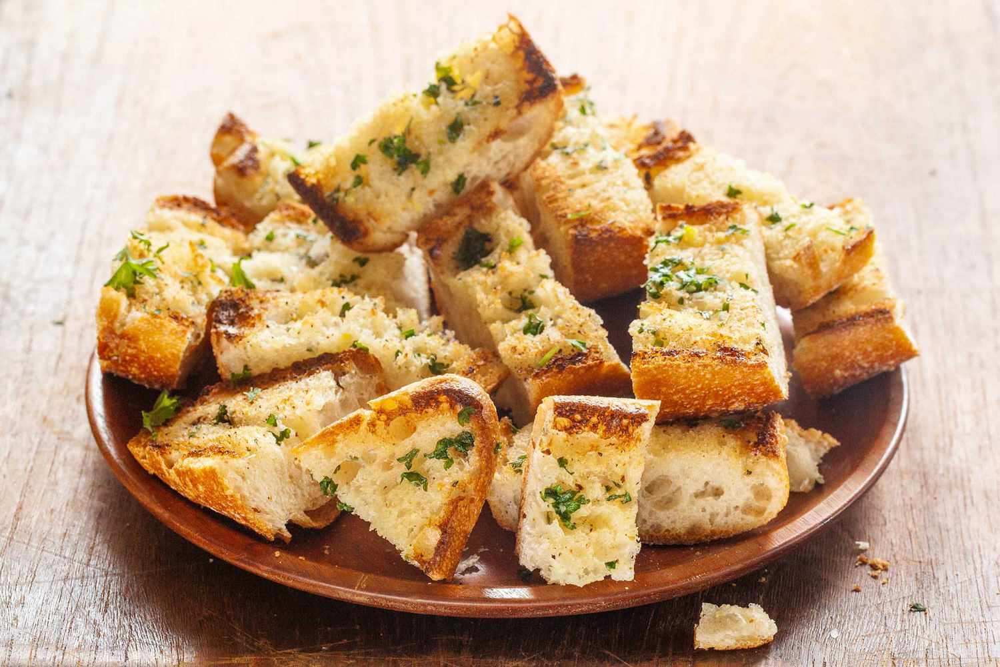

You may have once struggled with dry or greasy breads
reeking of burned or raw garlic, but it's tme to put that behind you.
This is a versatile recipe, as readily made with thin baguettes,
as it is with rustic sourdoughs and airy Italian loaves.
Cutting the bread like a Hasselback potato keeps the butter from
seeping out and allows the garlic to infuse the bread
with its flavor without scorching. But, if it's an extra
cheesy garlic bread you're looking for, slip a little mozzarella into each slit.
-
4 cloves garlic, crushed
- 2 tablespoons butter
-
2 tablespoons extra-virgin olive oil
-
1 load crusty bread, split
-
3 tablespoons grated cheese, Parmigiano
or Romano, optional
-
Chopped fresh parsley
-
Combine garlic, butter, and oil in a microwave safe dish
or in a small saucepan. Heat garlic and butter and oil in
microwave for 1 minute or in a small pot over moderate-low heat
for 3 minutes.
-
Toast split bread under broiler. Remove bread when it is toasted
golden brown in color. Brush bread liberally with garlic oil.
Sprinkle with cheese, if using, and parsley. If you added cheese,
return to broiler and brown 30 seconds. Cut into chunks and serve.